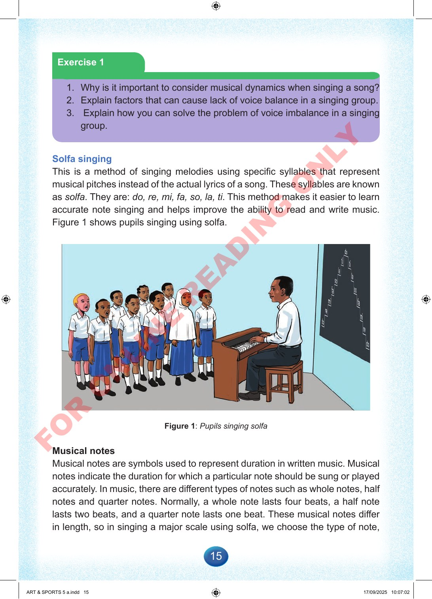

15
Exercise
1
1.
Why
is
it
important
to
consider
musical
dynamics
when
singing
a
song?
2.
Explain
factors
that
can
cause
lack
of
voice
balance
in
a
singing
group.
3.
Explain
how
you
can
solve
the
problem
of
voice
imbalance
in
a
singing
group.
Solfa
singing
This
is
a
method
of
singing
melodies
using
specific
syllables
that
represent
musical
pitches
instead
of
the
actual
lyrics
of
a
song.
These
syllables
are
known
as
solfa.
They
are:
do,
re,
mi,
fa,
so,
la,
ti.
This
method
makes
it
easier
to
learn
accurate
note
singing
and
helps
improve
the
ability
to
read
and
write
music.
Figure
1
shows
pupils
singing
using
solfa.
Figure
1:
Pupils
singing
solfa
Musical
notes
Musical
notes
are
symbols
used
to
represent
duration
in
written
music.
Musical
notes
indicate
the
duration
for
which
a
particular
note
should
be
sung
or
played
accurately.
In
music,
there
are
different
types
of
notes
such
as
whole
notes,
half
notes
and
quarter
notes.
Normally,
a
whole
note
lasts
four
beats,
a
half
note
lasts
two
beats,
and
a
quarter
note
lasts
one
beat.
These
musical
notes
differ
in
length,
so
in
singing
a
major
scale
using
solfa,
we
choose
the
type
of
note,
ART
&
SPORTS
5
a.indd
15
ART
&
SPORTS
5
a.indd
15
17/09/2025
10:07:02
17/09/2025
10:07:02
F
O
R
O
N
L
I
N
E
R
E
A
D
I
N
G
O
N
L
Y